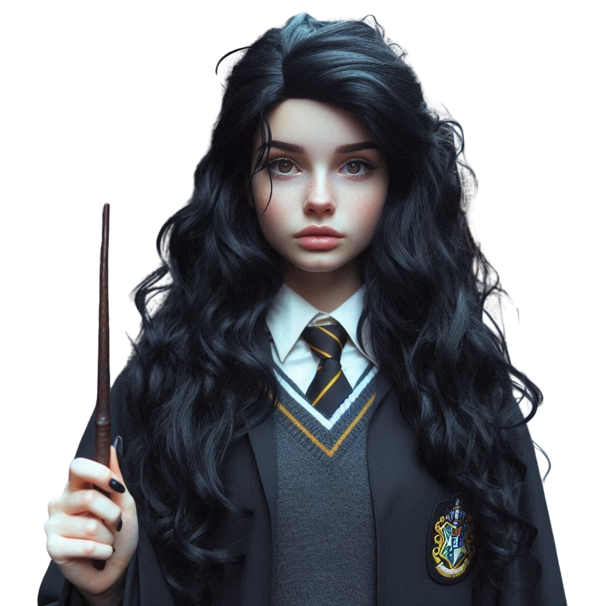
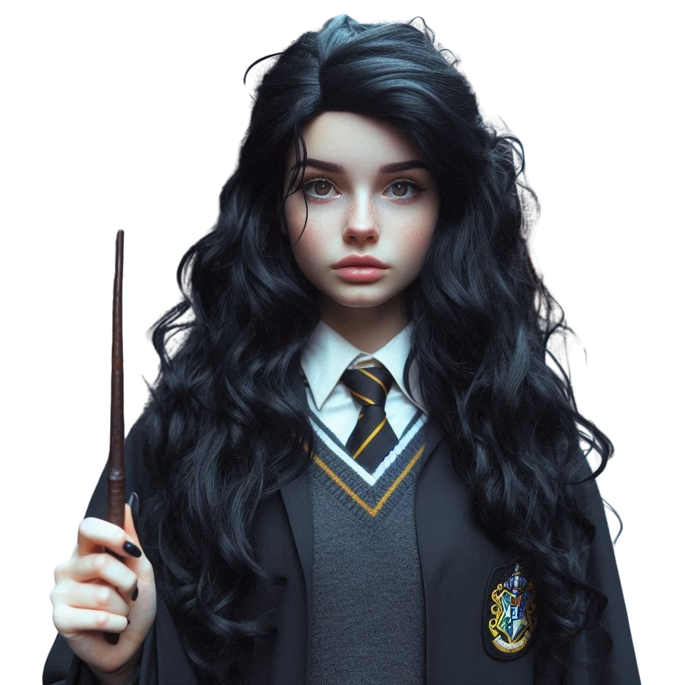
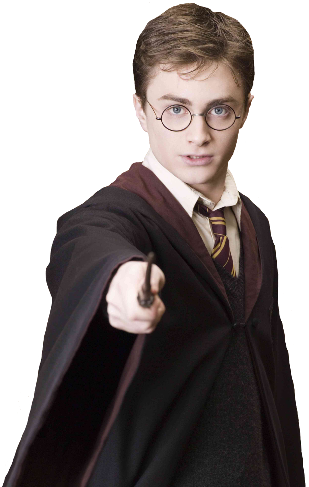
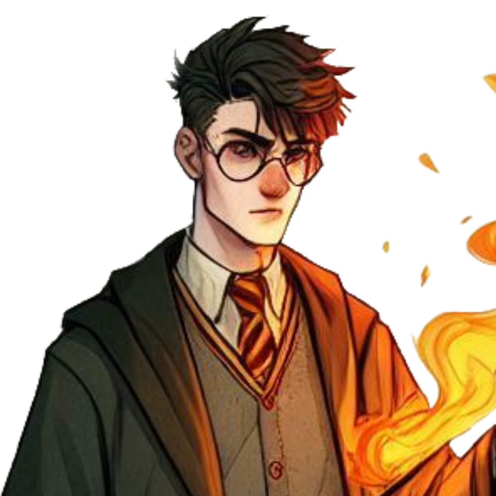
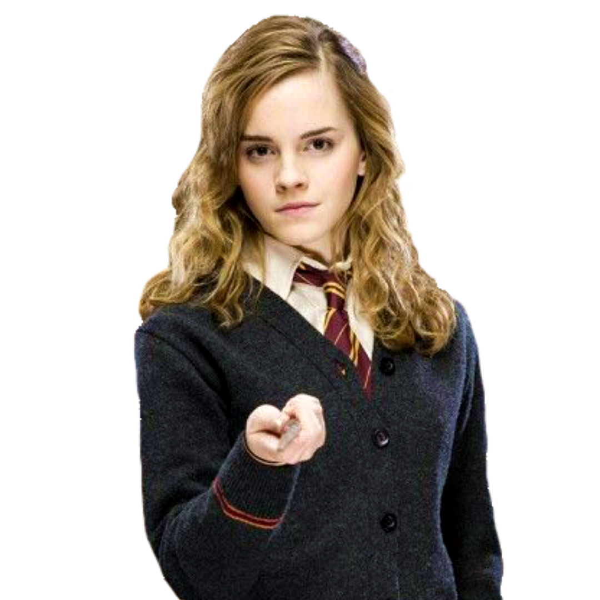
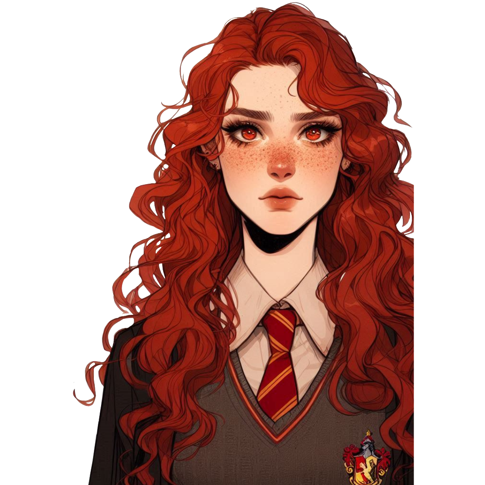
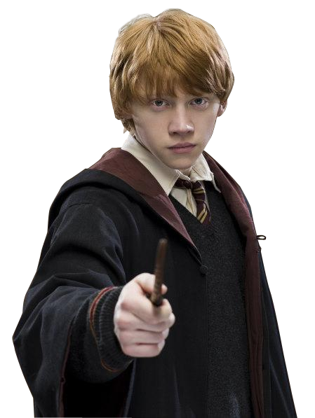

-
Mia Black
 
Apresentação
É uma jovem bruxa criada por pais adotivos, é filha perdida de Sirius Black, um bruxo famoso que desapareceu há anos. Ao receber sua carta para Hogwarts, Mia começa a explorar seu legado mágico e encontra conexão com o mundo bruxo, fazendo muita amizade com Harry Potter.
Mia começou sua jornada em Hogwarts com um misto de temor e fascínio. Ela encontrou rapidamente um lar nas casas da Grifinória, onde as semelhanças com seu pai perdido eram inconfundíveis.
A cada feitiço que aprendia, a cada aula que frequentava, Mia sentia uma conexão crescente com o mundo mágico que lhe era novo, mas ao mesmo tempo familiar.
-
Harry Potter
Apresentação
Harry, que descobre, aos 11 anos, que é um bruxo e que seus pais foram assassinados por Lord Voldemort, um poderoso bruxo das trevas.
Ao ingressar na escola de magia e bruxaria de Hogwarts, Harry faz amigos como Hermione Granger e Ron Weasley, e juntos eles enfrentam diversos desafios. Ao longo dos sete livros, Harry descobre mais sobre o passado de seus pais, sua conexão com Voldemort, e o destino que o leva a enfrentá-lo para salvar o mundo mágico.
A série aborda temas como amizade, coragem, amor, e a eterna luta entre o bem e o mal.
*Personagem real da série Harry Pottter.
-
Alex Krum
Apresentação
Seu poder se da a seus antepassados que passaram anos estudando sobre o fogo, fascinados sobre a sua essência, fazendo novas descobertas como por exemplo: o fogo amaldiçoado; o fogo congelado; o fogo sombrio.
Alex possue o sonho ousado de se tornar o primeiro de sua família a aprender sobre o fogo proíbido, mesmo as pessoas dizendo que é algo arriscado e que poucas pessoas realmente tentaram por ser algo muito díficil e que requer muita coragem, mas, coragem é algo que não falta para Alex.
-
Hermione
Apresentação
Nascida em uma família trouxa (não bruxa), ela descobre seus poderes mágicos aos 11 anos e é aceita em Hogwarts.
Hermione é extremamente inteligente, dedicada aos estudos e uma das melhores alunas da escola. Desde o início, ela se torna amiga de Harry Potter e Ron Weasley, formando um trio inseparável. Sua inteligência e habilidades mágicas são essenciais em várias situações, ajudando a resolver enigmas e enfrentar os desafios que surgem ao longo da série.
Ao longo da história, Hermione amadurece, se torna uma bruxa poderosa e assume um papel fundamental na luta contra Lord Voldemort, utilizando sua sagacidade e coragem para proteger seus amigos e derrotar as forças do mal.
*Personagem real da série Harry Pottter.
-
Lily Moon
Apresentação
Lily vem de uma família trouxa da Inglaterra. Seus pais não entendem muito sobre o mundo mágico, mas a apoiam incondicionalmente.
Foi selecionada para a Grifinória por seu grande senso de justiça e coragem. Lily se destaca em Transfiguração e Defesa Contra as Artes das Trevas.
Seu codinome "Fênix Vermelha" vem de um episódio no segundo ano, quando Lily conseguiu se transformar parcialmente em uma fênix durante uma aula - sua plumagem ficou vermelha e brilhante. Desde então, ela é conhecida por sua habilidade e coragem, assim como o símbolo de renascimento e esperança que uma fênix representa.
Fora da escola, Lily passa os verões com sua família, contando sobre suas aventuras em Hogwarts. Seu sonho é se tornar uma auror e ajudar a combater as Artes das Trevas depois de se formar.
-
Rony
Apresentação
Ele vem de uma grande e amorosa família de bruxos, mas não é tão destacado academicamente quanto Hermione ou tão famoso quanto Harry. No entanto, Rony é leal, corajoso e tem um grande coração.
Rony se torna amigo de Harry no primeiro ano em Hogwarts, e juntos, com Hermione, formam um trio que enfrenta muitos desafios ao longo dos anos. Embora às vezes se sinta inferior por ser pobre e menos talentoso em certas áreas, Ron mostra sua bravura e habilidade em momentos cruciais, como nos jogos de xadrez mágico ou nas batalhas contra as forças de Voldemort.
Ele amadurece ao longo da série, aprendendo a confiar em si mesmo e a valorizar suas próprias habilidades. No final, Rony se torna um herói ao lado de seus amigos, ajudando a derrotar Lord Voldemort e trazer a paz ao mundo mágico.
*Personagem real da série Harry Pottter.